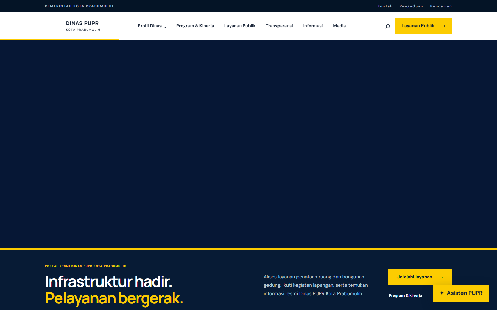
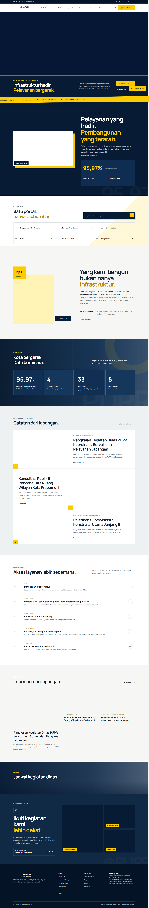
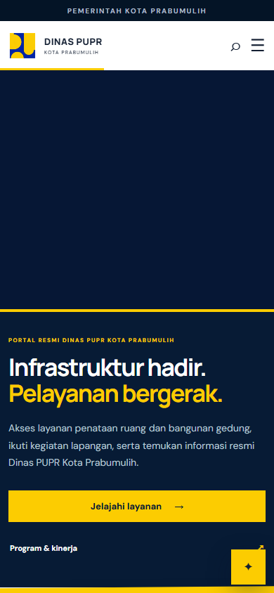
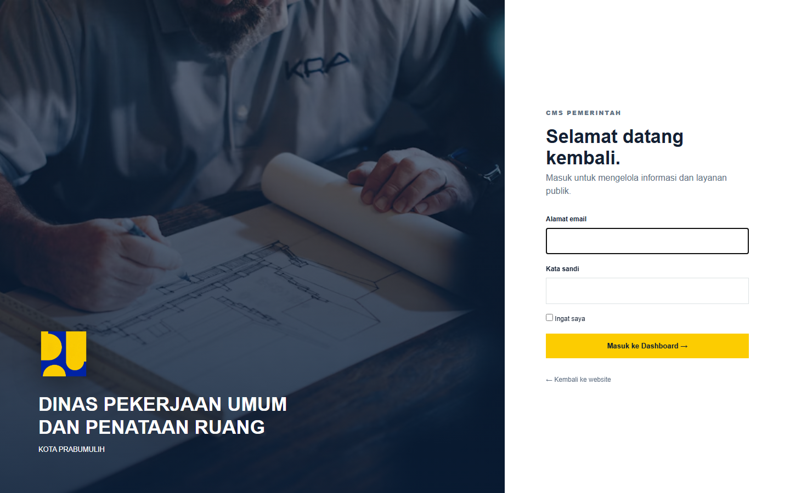
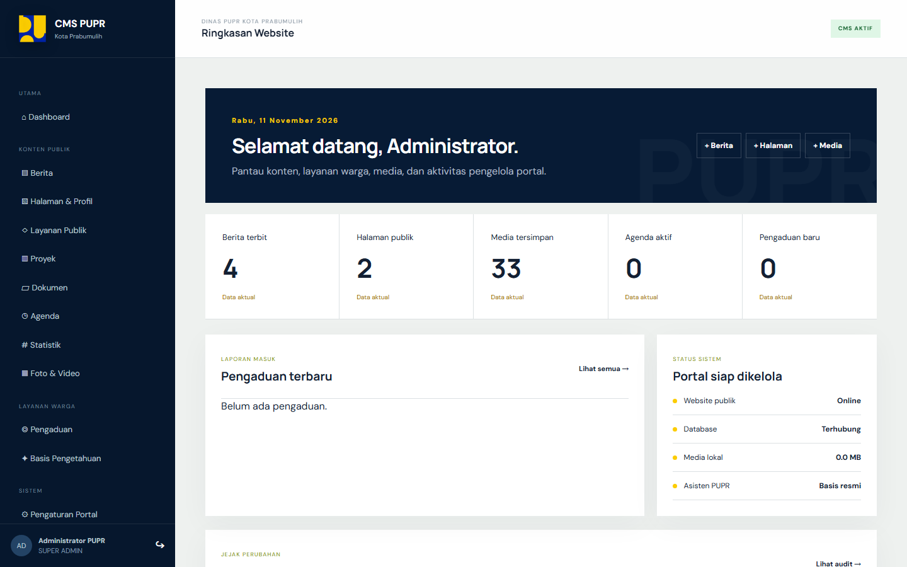
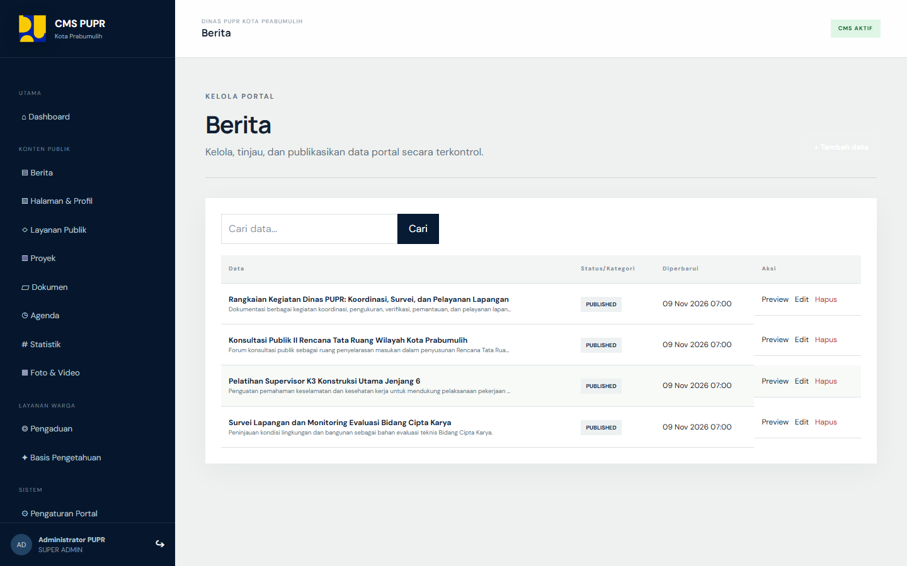
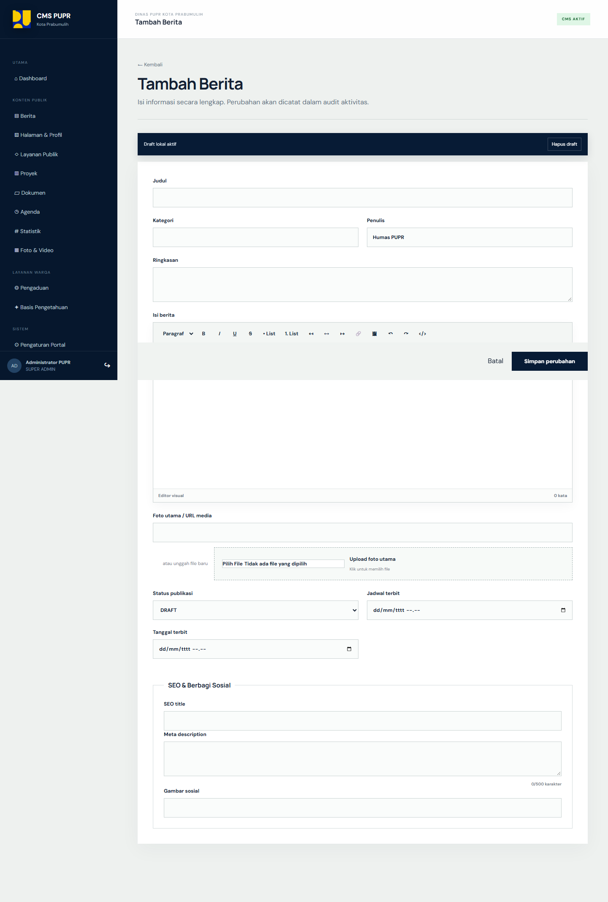

Panduan praktis membuka website publik, masuk ke halaman admin, dan mengelola konten.
DISUSUN OLEHConweb.idUntuk Dinas PUPR Kota Prabumulih11 November 2026Dokumen panduan operasional
CONWEB.IDDIGITAL PRODUCT DEVELOPMENT
Tentang Panduan Ini
Panduan ini ditujukan untuk petugas dan pengelola website Dinas PUPR Kota Prabumulih, termasuk pengguna yang belum terbiasa menggunakan sistem website.
Alamat penting Website publik: https://puprprabumulih.id Halaman admin: https://puprprabumulih.id/admin
Daftar Isi
01Membuka website publik
02Mengenali halaman Home
03Membuka website dari ponsel
04Membuka halaman admin
05Login ke CMS
06Mengenali dashboard
07Mengelola berita
08Membuat berita baru
09Mengelola modul lain
10Logout dan keamanan
Penting: Jangan membagikan email, password, kode akses, atau foto layar yang menampilkan data sensitif ke grup umum. Akses admin hanya diberikan kepada petugas resmi.
1. Membuka Website Publik
Buka aplikasi browser, misalnya Google Chrome, Microsoft Edge, Safari, atau Firefox.
Klik kolom alamat di bagian atas browser.
Ketik puprprabumulih.id, kemudian tekan Enter.
Tunggu hingga halaman utama tampil sempurna.

Gambar 1 — Tampilan awal Website Dinas PUPR Kota Prabumulih.
Tanda website berhasil dibuka: terlihat nama “Dinas PUPR Kota Prabumulih”, menu navigasi di bagian atas, serta judul “Infrastruktur hadir. Pelayanan bergerak.”
2. Mengenali Halaman Home
Halaman Home atau Beranda adalah halaman pertama yang dilihat masyarakat. Menu utama berada di bagian atas.
Profil DinasProfil, visi-misi, tugas dan fungsi, serta struktur organisasi.
Program & KinerjaInformasi proyek dan program pembangunan.
Layanan PublikInformasi layanan yang tersedia untuk masyarakat.
TransparansiDokumen dan informasi publik.
InformasiBerita dan agenda kegiatan.
MediaFoto, video, dan dokumentasi kegiatan.
PengaduanForm laporan atau keluhan masyarakat.
PencarianMencari informasi berdasarkan kata kunci.

Gambar 2 — Halaman Home lengkap. Gulir ke bawah untuk melihat layanan, proyek, berita, agenda, dan informasi lainnya.
3. Membuka Website dari Ponsel
Buka Chrome atau browser pada ponsel.
Ketik puprprabumulih.id.
Tekan ikon menu apabila daftar menu tidak langsung terlihat.
Gulir layar ke bawah untuk melihat seluruh konten.

Gambar 3 — Website otomatis menyesuaikan ukuran layar ponsel.
Jika tampilan belum diperbarui, tutup dan buka kembali browser atau gunakan fitur Refresh/Muat Ulang.
4. Membuka Halaman Admin
Halaman admin atau CMS digunakan untuk mengubah isi website. Halaman ini tidak ditujukan untuk masyarakat umum.
Buka browser.
Ketik alamat https://puprprabumulih.id/admin.
Halaman login CMS akan ditampilkan.

Gambar 4 — Halaman login CMS Dinas PUPR Kota Prabumulih.
Jangan menyimpan password pada komputer umum. Jika browser menawarkan “Simpan password”, pilih tidak apabila perangkat digunakan bersama.
5. Login ke CMS
Masukkan alamat email akun admin yang diberikan oleh PIC atau developer.
Masukkan kata sandi dengan benar.
Centang “Ingat saya” hanya pada perangkat pribadi yang aman.
Klik tombol Masuk ke Dashboard.
Jika gagal masuk: periksa huruf besar/kecil, pastikan tidak ada spasi tambahan, lalu coba kembali. Jika masih gagal, hubungi Super Admin—jangan mengirim password ke grup.
6. Mengenali Dashboard Admin

Gambar 5 — Dashboard CMS setelah login berhasil.
Bagian penting pada dashboard:
Menu sebelah kiriMemilih modul yang ingin dikelola.
Ringkasan angkaJumlah berita, halaman, media, agenda, dan pengaduan.
Pengaduan terbaruMenampilkan laporan masyarakat terbaru.
Status sistemMenunjukkan website dan database aktif.
Aktivitas pengelolaRiwayat perubahan yang dilakukan admin.
Tombol cepatMembuat berita, halaman, atau media.
7. Melihat dan Mengelola Berita
Klik menu Berita di sebelah kiri.
Daftar berita akan ditampilkan.
Gunakan kolom pencarian untuk mencari judul tertentu.
Klik Preview untuk melihat hasil, Edit untuk mengubah, atau Hapus untuk menghapus.
Klik + Tambah data untuk membuat berita baru.

Gambar 6 — Halaman pengelolaan berita.
Hati-hati saat menghapus. Pastikan data memang tidak diperlukan. Sebaiknya gunakan status ARCHIVED untuk konten lama apabila masih perlu disimpan.
8. Membuat Berita Baru

Gambar 7 — Form tambah berita dan editor visual.
Isi Judul berita.
Isi Kategori dan periksa nama Penulis.
Tulis Ringkasan singkat.
Tulis isi lengkap pada bagian Isi berita.
Pilih atau upload Foto utama.
Pilih status publikasi. Gunakan DRAFT jika belum selesai dan PUBLISHED jika siap ditampilkan.
Isi SEO jika diperlukan.
Klik Simpan perubahan.
Fungsi Toolbar Editor
Paragraf
Mengatur paragraf, judul bagian, atau kutipan.
B / I / U / S
Tebal, miring, garis bawah, dan coret.
• List / 1. List
Membuat daftar poin atau daftar bernomor.
Panah rata
Mengatur teks rata kiri, tengah, atau kanan.
Ikon rantai
Menambahkan tautan.
Ikon gambar
Mengunggah gambar ke dalam isi berita.
Undo / Redo
Membatalkan atau mengulangi perubahan terakhir.
Draft otomatis: sistem menyimpan draft lokal saat mengetik. Tetap klik Simpan perubahan agar data tersimpan resmi ke database.
9. Mengelola Modul Lain
Cara kerja modul lain hampir sama dengan Berita: buka menu, tambah atau edit data, lengkapi form, kemudian simpan.
Halaman & ProfilMengubah profil dan halaman informasi dinas.
Layanan PublikMengelola nama layanan, waktu, biaya, dan kontak.
ProyekMengelola lokasi, progres, status, dan foto proyek.
DokumenMengunggah dokumen transparansi dan informasi publik.
AgendaMengelola jadwal dan lokasi kegiatan.
StatistikMengubah angka ringkasan pada website.
Foto & VideoMengelola media dan keterangan gambar.
PengaduanMemeriksa dan memperbarui status laporan warga.
Basis PengetahuanMengatur informasi jawaban Asisten PUPR.
Pengaturan PortalMengubah identitas, kontak, logo, dan pengaturan umum.
Menu yang terlihat dapat berbeda sesuai hak akses akun. Hubungi Super Admin jika tugas Anda memerlukan menu yang belum tersedia.
10. Logout dan Keamanan
Cara keluar dari CMS
Lihat bagian kiri bawah dashboard.
Klik ikon keluar di samping nama pengguna.
Pastikan halaman kembali ke halaman login.
Aturan keamanan
Gunakan akun masing-masing dan jangan meminjamkan akun.
Gunakan password yang kuat dan berbeda dari akun lain.
Jangan mengirim password melalui grup WhatsApp.
Selalu logout setelah selesai, terutama pada komputer bersama.
Periksa ulang konten sebelum memilih status PUBLISHED.
Jangan mengunggah data pribadi atau dokumen rahasia.
Laporkan perubahan mencurigakan kepada Super Admin.
Ringkasan Cepat
Untuk masyarakat: Buka puprprabumulih.id, pilih menu, lalu baca informasi yang dibutuhkan.
Untuk admin: Buka puprprabumulih.id/admin, login, pilih modul, lakukan perubahan, kemudian simpan.
Kontak Bantuan
Jika terjadi kendala teknis, catat halaman yang dibuka, waktu kejadian, pesan error, dan screenshot. Sampaikan kepada PIC website atau tim teknis Conweb.id tanpa menyertakan password.